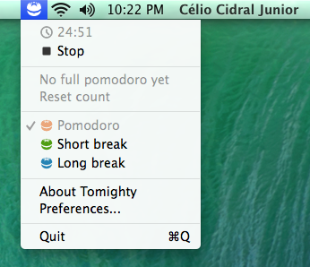
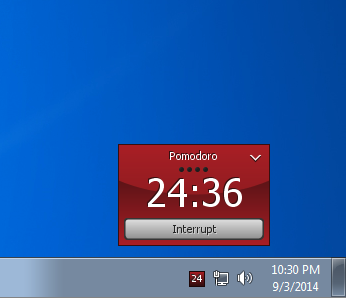

Available for
 
Do you like it? Please consider making a donation.
Bitcoin:
184rodV72dNrYiQakwNWFGrfR1Tbs5Nseh
Tomighty is a desktop timer specifically designed for the Pomodoro Technique®. It's a software created and developed by Célio Cidral Junior, licensed to you under the Apache License 2.0. It’s free (gratis) and open source.
You can talk about Tomighty at the Google Group.
The Pomodoro Technique® is a very simple and effective time management technique that helps you keep focused on tasks that require long periods of concentration. Read more about it at the official website.
Pomodoro Technique® and Pomodoro™ are registered and filed trademarks owned by Francesco Cirillo. Tomighty is not affiliated by, associated with nor endorsed by Francesco Cirillo.
Tomato logo designed by José Campos from the Noun Project.